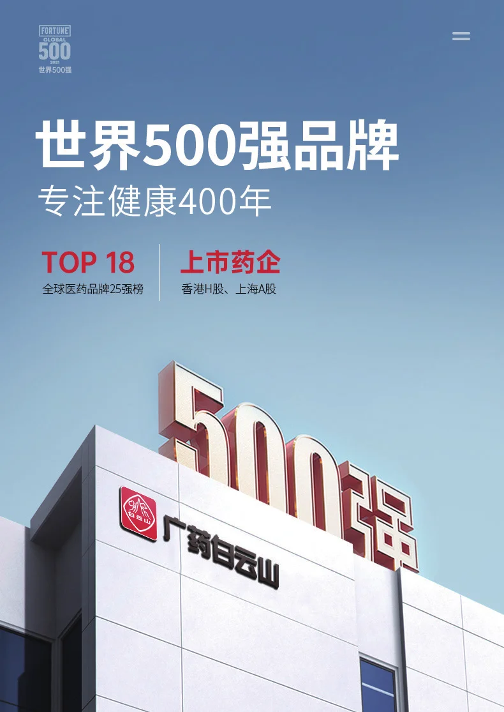

Siapa Amy Skin OEM?
Amy Skin adalah merek OEM / ODM perawatan kulit label pribadi yang dibuat di pabrik kami di Guangzhou, Tiongkok. Kami membantu merek baru dan berkembang meluncurkan perawatan kulit dengan formula siap pakai atau pengembangan khusus, mulai dari MOQ 1,000 unit per SKU.
Janji kami: 3A
Tiba Handal. Kulit yang bagus, harga yang jujur dan produksi Anda dapat melacak langkah demi langkah.
Selalu santai. Low MOQ. Perawatan kulit membuat layanan OEM / ODM yang sebenarnya dapat diakses oleh merek kecil.
Sebenarnya Affordable. Harga yang kompetitif dan jujur — dikutip per pesanan, tidak tetap di situs ini, karena harga yang tepat tergantung pada formula, kemasan, dan jumlah.
Di mana kita berasal
Pembuatan kami lebih jauh dari nama Amy Skin. Pabrik kami di Guangzhou, Tiongkok, menjalankan sebuah basis taman industri, dengan pengalaman produksi selama 20 tahun. Amy Skin membawa produksi ini bersama-sama di bawah satu merek label pribadi.
Merek yang kita hasilkan
Pabrik kami memproduksi merek yang mapan di rumah dan di luar negeri termasuk sebuah kelompok farmasi Fortune Global 500 dan grup deterjen terkemuka.

Baiyunshan
Guangzhou Baiyunshan Pharmaceutical Holdings, didirikan 1997 merek Fortune Global 500, berfokus pada kesehatan selama 400 tahun. Peringkat 205 pada 2020 Festival Merek Tiongkok 500; terdaftar di Hong Kong dan Shanghai.

Dr.Morita
Didirikan pada tahun 1934 di Changhua, Taiwan, dengan cabang di Shanghai, Hong Kong dan Tokyo, dikenal di Taiwan sebagai ahli facial.

CnIce (NICE Group)
Seorang pembuat deterjen dan produk perawatan pribadi Tiongkok terkemuka, dan seorang pemimpin nasional dalam industrinya merasa terhormat sebagai perusahaan kredit AAA dan sebuah situs demonstrasi industri nasional.
Tim kami
Tim profesional + teknologi profesional = layanan profesional. Tiga tim mengawal setiap pesanan dari ide ke rak.

Perencanaan dan rancangan
Tempat lahirnya jiwa seseorang adalah perencanaan dasar yang memberikan suatu produk vitalitas yang bertahan lama.

Legal dan regulasi
Sistem pengarsipan lengkap dan manajemen hukum profesional, menjaga merek Anda.

R&D
Dasar dari bisnis yang rajin dan inovasi-driven, selalu memperbaiki, membawa klien inspirasi segar.
Apa yang dikonfirmasi
| Item | Dikonfirmasi |
|---|---|
| Label & logo | Black & Gold serif — Cormorant Garamond wordmark, droplet-A mark, Hero Black #0A0908 / Champagne Gold #C9A86A / Cream #FAF6EF / White #fnwig |
| Model | OEM / ODM perawatan kulit label pribadi — dibuat di pabrik kami di Guangzhou, Tiongkok |
| MOQ | 1,000 unit per SKU |
| Formula | 10,000+ formula siap, ditambah formulasi kustom setiap merek mendapatkan formula sendiri |
| Sertifikat | SGS ISO 22716 (verified). |
| Kontak | WhatsApp +86 189 2882 3858; info@amyskinoem.com |
Dapatkan Penawaran Whats Appus Kita
Selanjutnya: Sertifikasi berdasarkan pasar → · Proses 6 langkah →